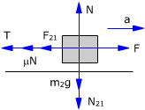
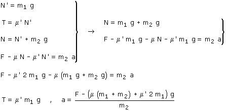

Si los bloques tienen aceleraciones diferentes no sirve
para nada utilizar el c.d.m, hay que estudiar los bloques por separado.
El bloque 1 se moverá hacia la derecha y el bloque 2 permanecera
quieto
 |
 |
Las fuerzas N12, N21 (Acción y reacción) tienen el mismo módulo: N' Las fuerzas F12, F21 (Fuerza de rozamiento) tienen el mismo modulo: μN' (Módulo de la fuerza de rozamiento cuando hay movimiento relativo entre los bloques) |
 |
 |
Combinando las ecuaciones obtenidas resulta un sistema de incógnitas: N, N', T, a
